On the north side of Thornbury Road , this brown roofed building is north and to the right of a tree.
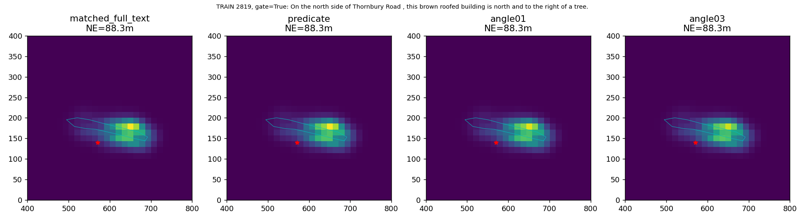
TRAIN图红星GT仅事后；地图轴不等于已核验地理北，自动关系标签非人工真值。
中文报告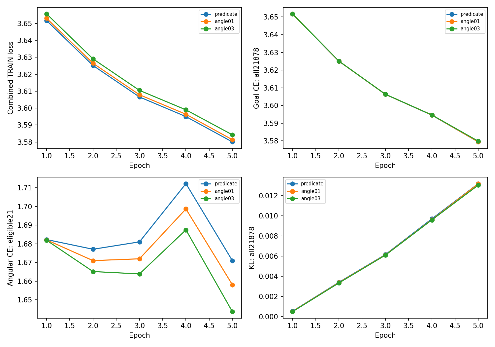
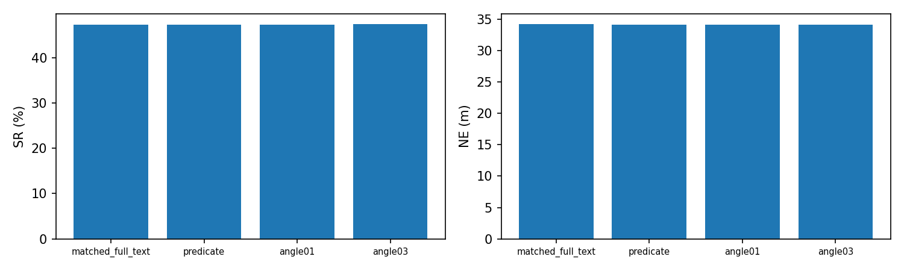
On the north side of Thornbury Road , this brown roofed building is north and to the right of a tree.

On the north side of Thornbury Road, this large brown roofed building is the leftmost one, next to some blue pavement.
On the south side of Thornbury Road , this gray roofed building is directly to the left of a building next to a parking lot that has a red car parked in it.
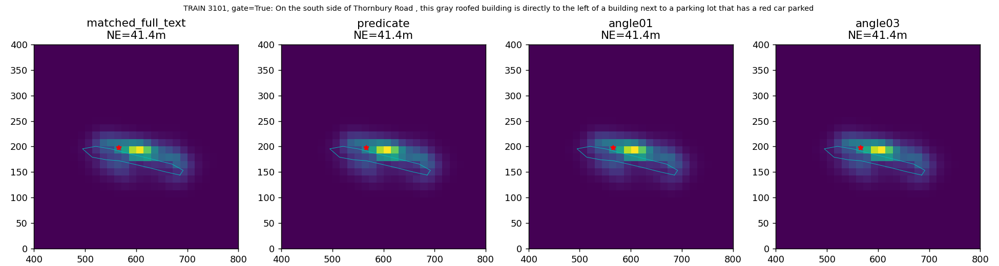
On the south side of Thornbury Road , this gray roofed building is tenth from the left and across from a tree.
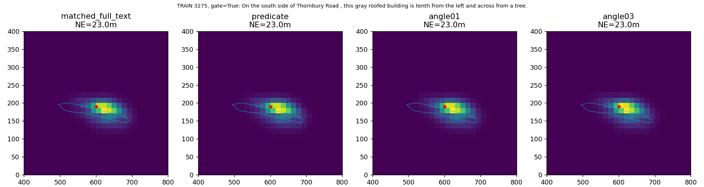
On the south side of Thornbury Road, this gray roofed building is third building from the right, with a more narrow back section.
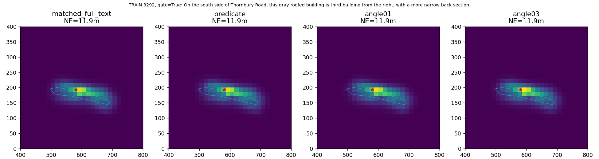
On the south side of Thornbury Road, this white car is third from the left, to the right of a gray car.
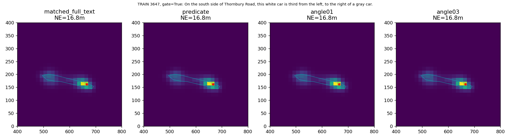
On the south side of The Broadway, this white car is first from the right, to the right of a gray car.
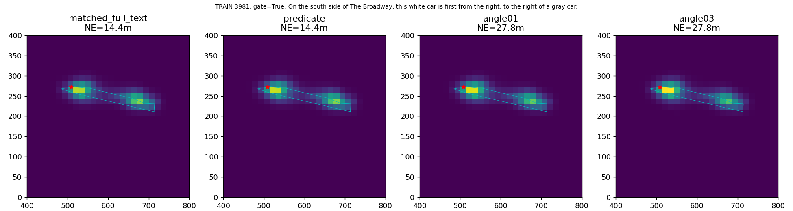
On the south side of Thornbury Road, this gray roofed building is second building from the left.
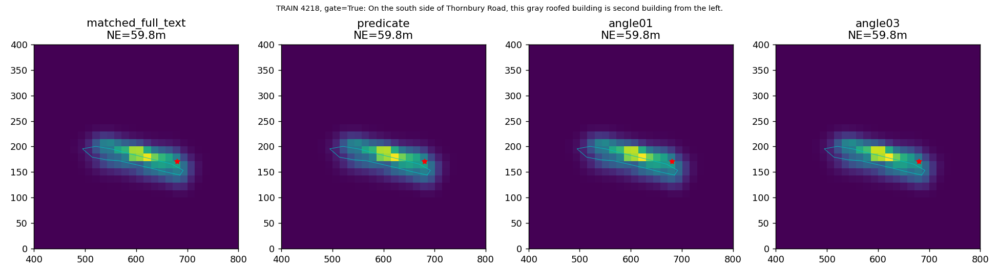
On the south side of The Broadway, this gray roofed building is the right side of the fourth building from the left.
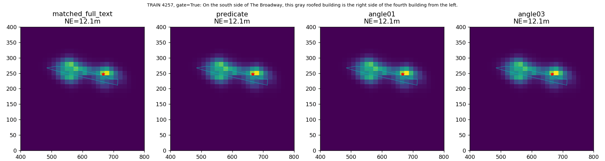
To the north of Perry Barr Bus Depot, this white car is fourth car from the right on the northmost row of the parking lot.
To the north of Perry Barr Bus Depot, this dark blue car is the car closest to three orange cubes in the parking lot.
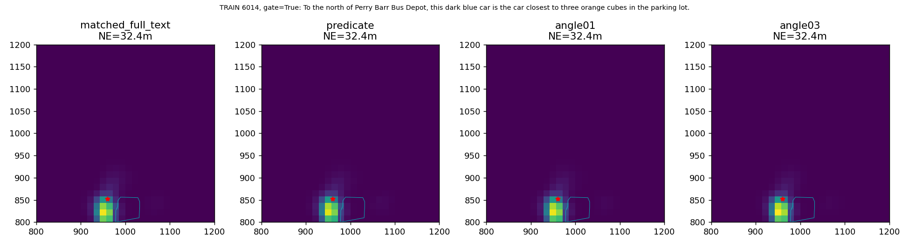
To the south of W.D.M Cars, this parking lot has a long brown structure near the middle.
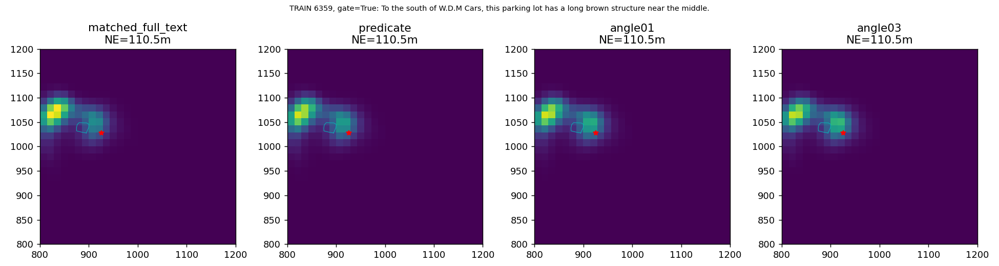
To the north of Perry Barr Bus Depot, this dark blue car is first car from the bottom on the leftmost row of the parking lot.
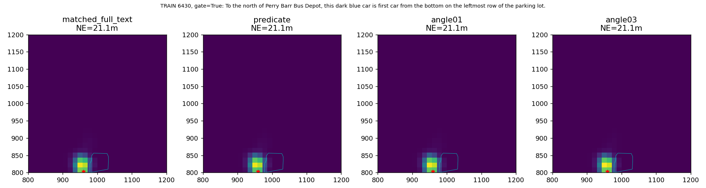
To the north of Perry Barr Bus Depot, this dark gray car is third car from the top on the third row from the left of the parking lot.
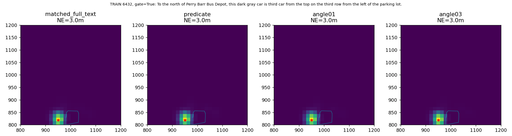
To the north of Perry Barr Bus Depot, this blue car is second car from the top on the middle row of the parking lot.
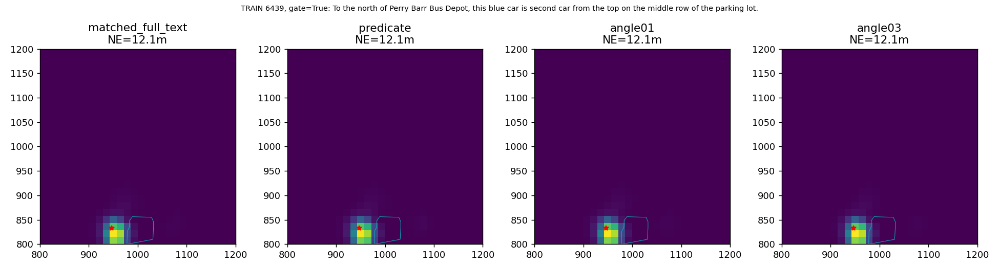
To the south of West Midlands Police Custody Suite, this blue car is near the building, facing a white car.
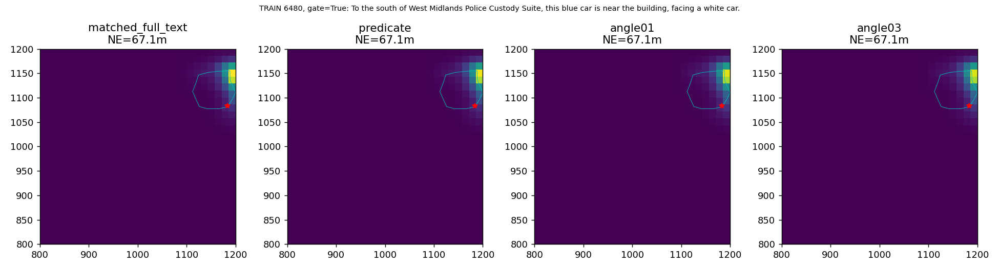
South of Weighbridge Offices, this gray roofed building has several cars, two green, parked next to it.
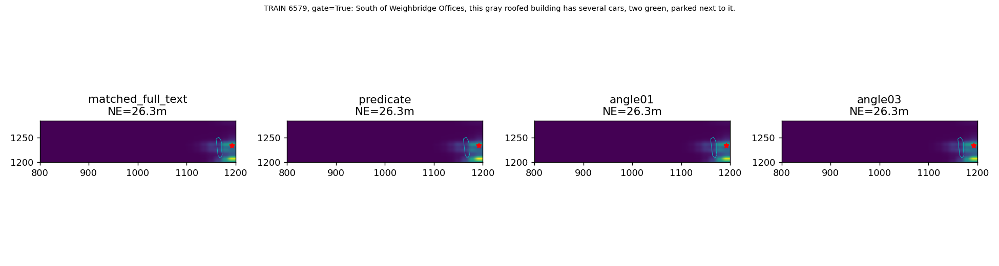
The large building on Wellington Rd / Grosvenor Rd that has a parking lot beside it and a white box in the backyard in front of the Full Circle Events & Exhibition Ltd building.
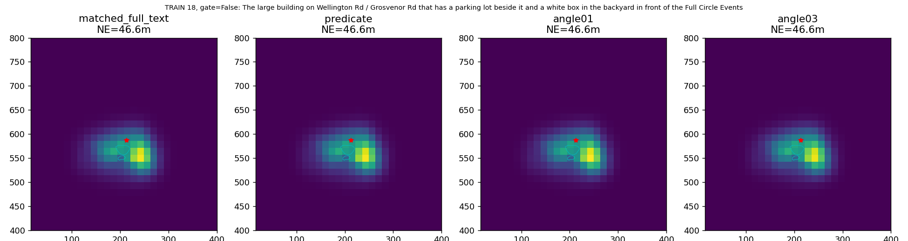
This is a building located on Wellington Rd/ Grosvenor Rd. Near it is a parking space with about a dozen cars in it.
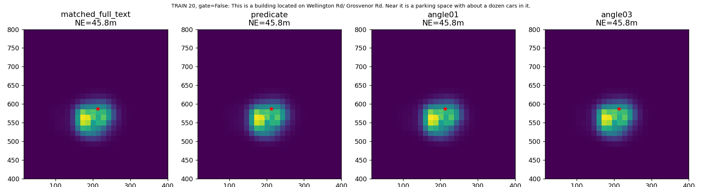
The large gray and reddish gray building at the intersection of Wellington Road and Grosvenor Road.
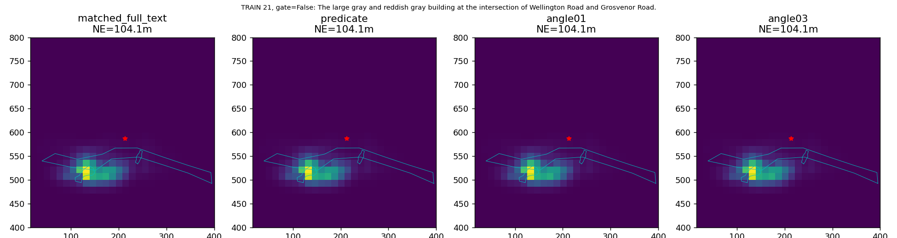
Brown and white building with a light brown roof, that has a brown and light brown diamond pattern in its front yard, next to the St Teresa of the Child Jesus Catholic church building off Wellington Road
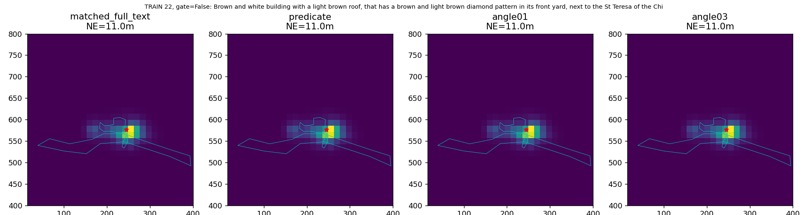
this is a blue car and it is in the parking lot of the One Stop building. this car is in the 4th parking row west of The Food Warehouse and is the 2nd car from the north. There is a black car to the north of this car and a white car to the south.
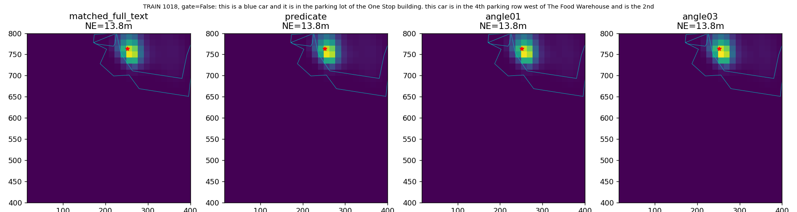
this is a white car and it is in the parking lot of the One Stop building. this car is in the 9th park row west of The Food Warehouse and is the 7th car from the north. The parking spaces to the north and south of this car are empty.
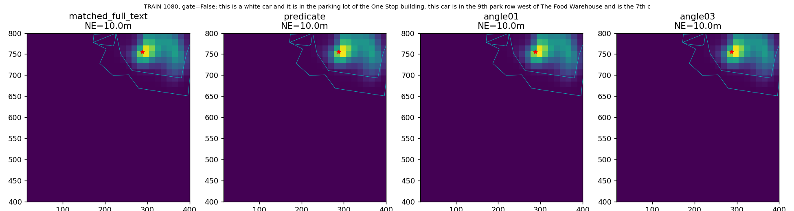
this is a black car and it is in the parking lot of the One Stop building. this car is in the 14th parking row west of The Food Warehouse and is the 1st car from the south. To the north of this car is another black car, to the south there is no car.
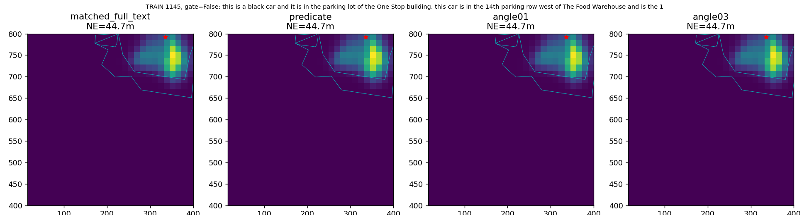
A red car parked in the single row of cars in the parking lot located north of the One Stop Building overlooking a highway; it is next to an empty parking space
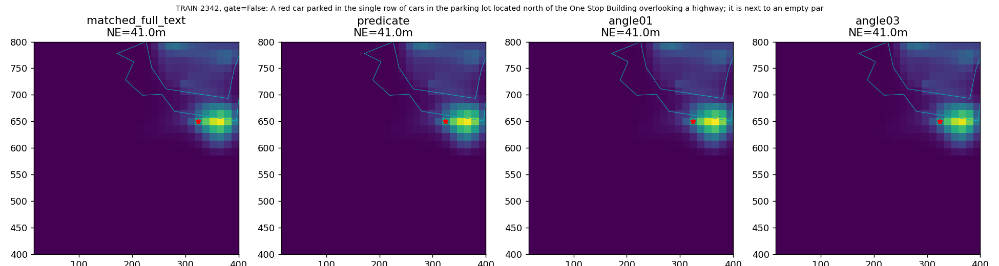
The whole section of buildings beside the and including the bright orange buildings on Wellington street between Leslie and Willmore.
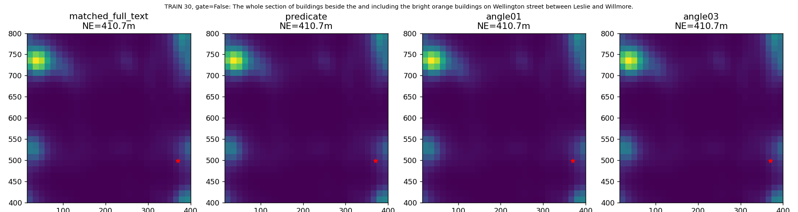
Two-story brown house with a gray roof that is second from the edge of the map of Wilmore Road, that has one white car and one black car in front of it and a green pool in the backyard
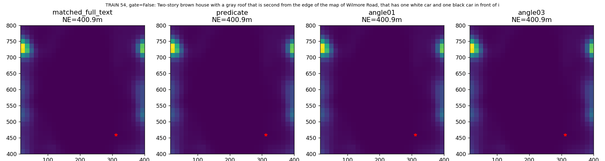
Multi-unit and multi-colored Brown, White, gray and red housing complex that extends from the edge of the map and encompasses most of Wilmore Road
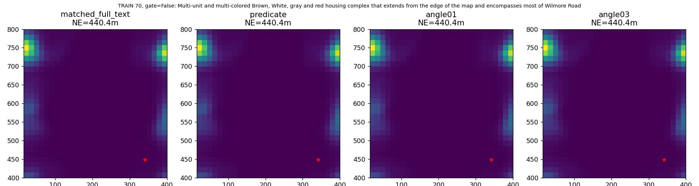
A square building with a brown roof off of Wellington Drive next to the side road of Grosvernor Road. There is a white car parked behind this building.
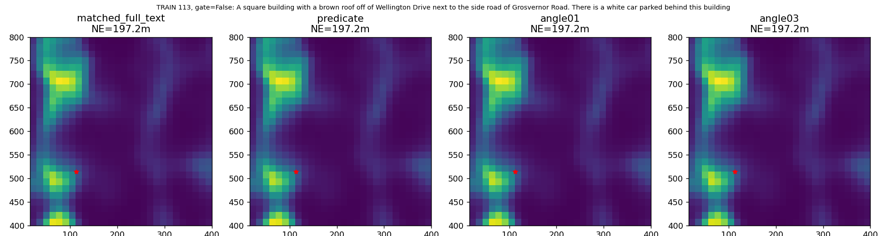
The black car that is parked under the tree at the corner of the Chesterwood Gardens Road.
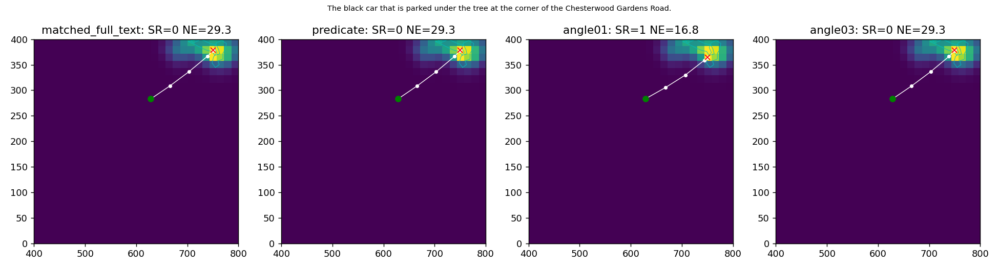
Center section of a White multi-building complex with brown roofs, the red-lined section also having a gray roof and a brick red colored roof find it near the corner of Botolph Lane and trumpington Street
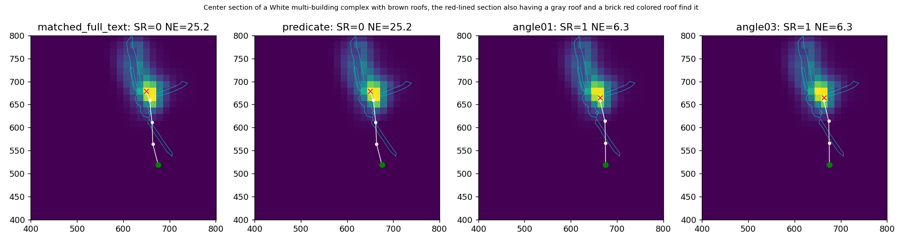
With Stoneleigh Road on the left and the intersection to Bragg Road just below, it is the white car on Bragg road, right by the intersection with a red car in parallel and below it.
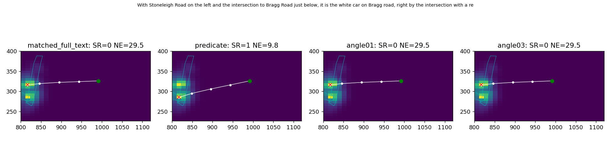
The large parking lot between the Perry Barr Bus Depot and Oscott Gardens.
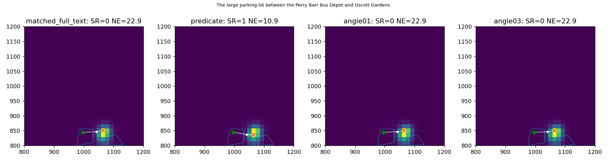
A gray car with a sunroof parked in the leftmost row of cars from the entrance off Holford Drive, in the Police Custody Suite parking lot. there is a white car to the left and a blue car with a black roof to the right and behind it diagonally is a blue shed in the grass.
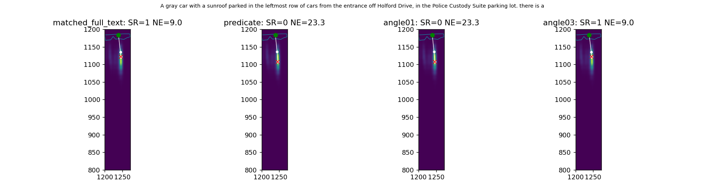